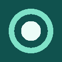
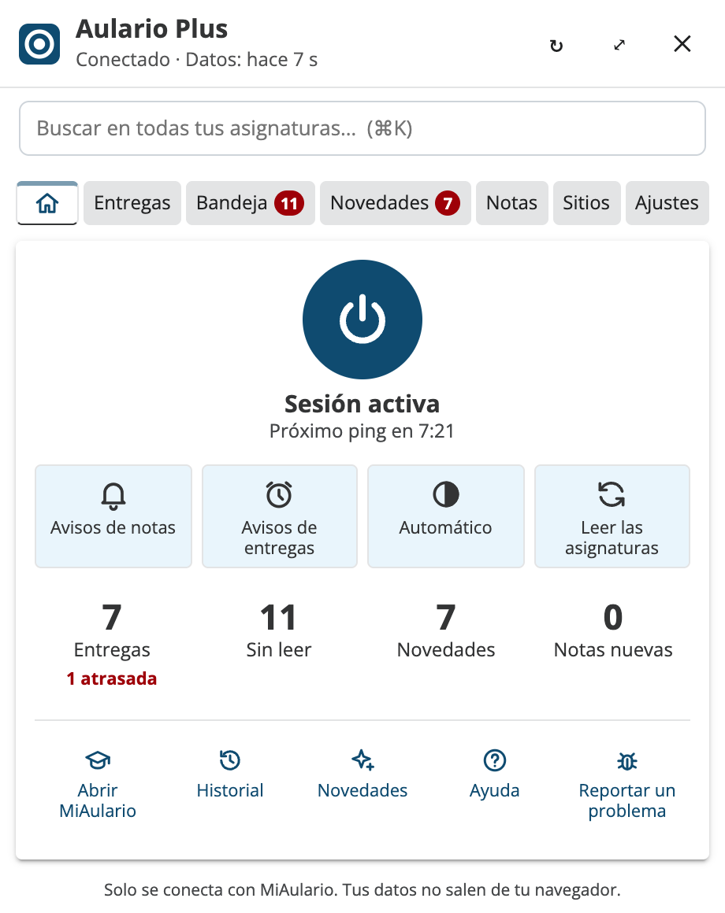
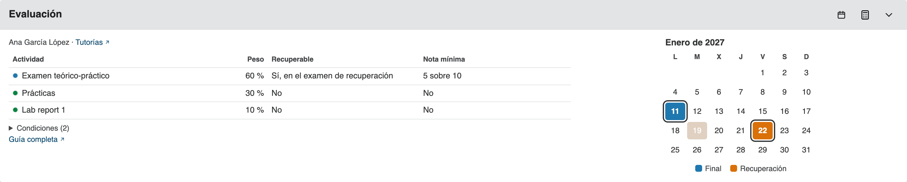

Aulario Plus
Una extensión para MiAulario, el campus virtual de la UPNA. Tu sesión no se cierra mientras el navegador está abierto, y las entregas, los anuncios, los mensajes y las notas de todas tus asignaturas están en un solo lugar.
En Edge, Brave, Opera y Vivaldi se instala también desde la Chrome Web Store. La versión de Firefox está en revisión en Mozilla; mientras tanto, el ZIP está en GitHub.

Pulsa las pestañas de la imagen para ver cada parte del popup.
Qué hace
- Mantiene tu sesión de MiAulario abierta mientras el navegador está abierto.
- Un calendario de tus exámenes por meses, en Mi sitio y en cada asignatura.
- Entregas con cuenta atrás, y avisos antes de las que no entregaste.
- En Mi sitio: tus exámenes finales, cómo se evalúa cada asignatura y una calculadora de notas.
- Un buscador para todas tus asignaturas: herramientas, archivos, contenidos, entregas y anuncios.
- Seis temas para elegir, cada uno en light y dark mode.
- Anuncios, mensajes, novedades desde tu última visita y notas nuevas de todas tus asignaturas.
- Descarga una asignatura entera en ZIP y envía archivos por el correo interno.
- Tu media y tu rango con las notas oficiales de SIGMA, si lo activas.
- Confeti cuando entregas una tarea o un examen, sin sonido. Se puede apagar.
Calendario de exámenes
Tus finales y recuperaciones en un calendario por meses: en cada semestre de Mi sitio y junto a la guía de cada asignatura, en el espacio libre a su derecha. Pasa el ratón por un día para ver la asignatura, el tipo de examen, la hora y el aula. El botón del calendario lo muestra u oculta.

En Mi sitio
Arriba de tu página de Mi sitio aparece un bloque con tu próximo examen final, las fechas de los exámenes de cada asignatura y la guía docente de cada una: quién la da y cuánto vale cada parte. Con la calculadora ves qué nota te falta para aprobar.
Cada semestre tiene su calendario de exámenes por meses. El triángulo de la esquina pone el bloque a todo el ancho de la página, con el calendario de MiAulario debajo.

El buscador
Dentro de MiAulario, pulsa Ctrl+K / ⌘K y escribe unas letras: «ip enun» encuentra los enunciados de Informática y Programación. Busca en las herramientas, los archivos, los contenidos, las entregas y los anuncios de todas tus asignaturas.

Temas
Seis temas para que la extensión se vea como prefieras, cada uno en light y dark mode: MiAulario (el de siempre, igual que MiAulario), Cómic, Malvavisco, Aurora, AulaXP y Folio. Se eligen en Ajustes.


En cada asignatura
En la página de inicio de cada asignatura ves lo nuevo desde tu última visita: archivos, anuncios, entregas y notas. Debajo está cómo se evalúa, con la tabla de la guía docente: el peso de cada parte, si se recupera y la nota mínima. El botón de la calculadora la abre con tus notas, y el del calendario muestra tus exámenes de la asignatura a su derecha.
En Recursos, junto a cada archivo, hay un sobre para enviarlo por el correo interno, y arriba un botón para descargar la asignatura entera en ZIP.

Escribir a un profesor
En el menú de tus sitios, junto al nombre de cada asignatura, hay un lápiz para ponerle un nombre más corto y un sobre para escribir a un profesor. El sobre muestra quién da la asignatura, con el responsable primero y el enlace a sus tutorías, y abre el Correo interno con tu plantilla. El mensaje lo envías tú.

Tu rango
Si activas «Notas oficiales (SIGMA)» en Ajustes, la extensión lee tu expediente oficial y pone tu media y tu rango junto a tu foto en MiAulario. Hay ocho rangos, de Bronce a Leyenda, uno por cada octavo de los créditos de tu carrera, y cada uno tiene su gema.
Al pulsarlo ves cuántos créditos llevas, qué te falta para el siguiente rango y lo que acabas de aprobar. Tus notas se quedan en tu navegador.

Privacidad
La extensión solo se conecta con MiAulario y con páginas públicas de la UPNA, como las guías docentes y los calendarios de exámenes. No tiene analíticas ni servidores propios: tus datos se quedan en tu navegador. Lo explica entero la política de privacidad.
No la uses en un ordenador compartido: mantiene tu sesión abierta.
Ayuda
Si algo no funciona o tienes una idea, escríbelo en GitHub. El código es abierto, con licencia MIT. Si te sirve, puedes invitarme a un café.